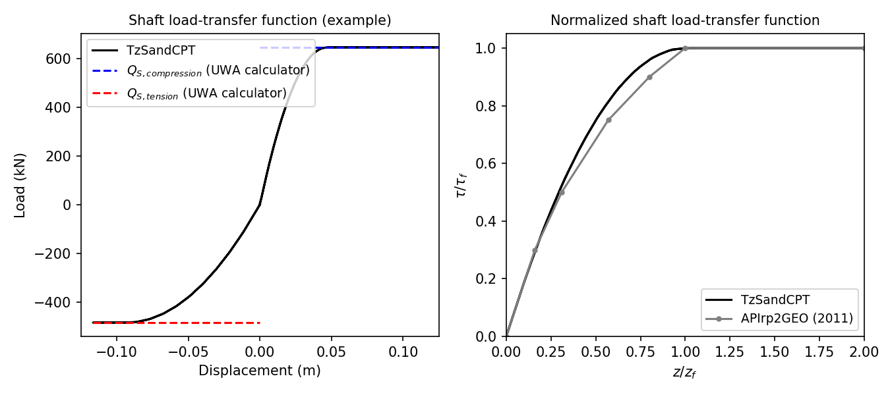

TzSandCPT
The TzSandCPT function implements the shaft-load transfer function, commonly referred to as the t-z curve or spring. The required inputs to construct this material are as follows:
uniaxialMaterial('TzSandCPT', matTag, qc, Sv_eff, D, t, h, dz, dcpt, pa, delta_f=29.0):
"""
Constructs a TzSandCPT uniaxial material object.
Args:
matTag (int): Integer tag identifying material.
qc (float): Cone resistance.
Sv_eff (float): Vertical effective soil stress.
D (float): Pile outer diameter.
t (float): Pile wall thickness.
h (float): Distance to the pile tip.
dz (float): Local pile height.
dcpt (float): Diameter of the standard CPT probe (see note).
pa (float): Atmospheric pressure (see note).
delta_f (float, optional): Ultimate interface friction angle (default: 29.0 degrees).
Returns:
uniaxialMaterial: TzSandCPT material object.
Note:
- The nominal value of the diameter of the standard CPT probe is 35.7mm.
- For the atmospheric pressure, a value of 100 kPa or equivalent may be retained.
- For the ultimate sand-pile interface friction angle, in the absence of site-specific measurements,
the recommended value of 29° is assumed as suggested in the literature.
"""
1. Description
The shaft or skin friction load-transfer function is computed according to the new Unified CPT-based method [1] for driven piles in sands. The unified method for sands assumes a parabolic formula as given below.
where the ratio \( \frac{G}{\tau_{\mathrm{f}}} \) is inversely proportional to the displacement \( z_f \) at which the peak shear friction \( \tau_f \) is mobilized.
The API (2011) guidelines recommend a constant value of 0.01 for the normalized peak displacement \( \frac{z_f}{D} \). The unified method proposes the following expression that allows for a better match with the database pile test results:
where \( p_a \) is the atmospheric pressure, equal to 100 kPa, and \( \sigma_{\mathrm{v}}^{\prime} \) is the vertical effective stress. The proposed values for \( A \) are 1250 for compression and half of that, i.e., 625, for tension.
1.1. Ultimate skin friction
The material calculates the maximum shaft or skin friction according to the formulations as developed in [2]. A Coulomb’s law is assumed to estimate \( \tau_f \) as follows:
where \( \sigma'_{rc} \) is the (stationary) radial effective stress, \( \Delta \sigma'_{rd} \) is the increase in radial effective stress that occurs during pile loading. The term \( \delta_f \) stands for the ultimate sand-pile interface friction angle, in the absence of site-specific measurements, a constant value of \( 29^\circ \) is recommended. The coefficient \( \frac{f_t}{f_c} \) becomes 1 for compression loading and 0.75 for tension loading.
The term \( \sigma'_{rc} \) is calculated below.
where \( h \) refers to the distance from the pile tip to a given soil depth, and \( A_{re} \) represents the effective area ratio. Note that for a closed-ended pile \( A_{re} \) becomes 1.
being \( D_{i} \) the pile inner diameter and \( \text{PLR} \) the ratio of the plug length to the pile embedment which can be approximated as shown in the following equation.
The \( \Delta \sigma'_{rd} \) term is usually attributed to dilation effects and can be calculated as follows:
with the nominal diameter of a CPT probe being \( d_{CPT} = 35.7 \) mm.
2. Material behaviour
The input data assumed is based on a typical sand site in the Gulf of Mexico. The simulated behavior for this example is shown in the following figure.

Users can verify that the internally computed ultimate shaft friction values should be 84.3kPa and 63.2kPa for compression and tension loading, respectively. These estimates were confirmed by comparing them with those computed using the UWA calculator, which led to the same results. This can be observed in the left plot, displaying the simulated load-displacement response.
The right plot compares the normalized form of the simulated TzSandCPT response against the load-transfer curve recommended in API (2011). This comparison shows a close match, as discussed in [1].
3. How to use
The following constructs a TzSandCPT material with a tag of 1, \( q_c \) of 39928 kPa, \( \sigma'_v \) of 203.8 kPa, \( D \) of 2.44 m, \( t \) of 0.0445 m, \( h \) of 40 m, \( \Delta_z \) of 1 m, \( d_{CPT} \) of 35.7 mm, and \( p_{a} \) of 100 kPa.
References
[1] Lehane, B. M., Li, L., & Bittar, E. J. (2020). Cone penetration test-based load-transfer formulations for driven piles in sand. Geotechnique Letters , 10 (4), 568-574.
[2] Lehane, B. M., Liu, Z., Bittar, E., Nadim, F., Lacasse, S., Jardine, R., ... & Gavin, K. (2020). A new'unified'CPT-based axial pile capacity design method for driven piles in sand. In 4th International Symposium on Frontiers in Offshore Geotechnics (postponed) (pp. 462-477).